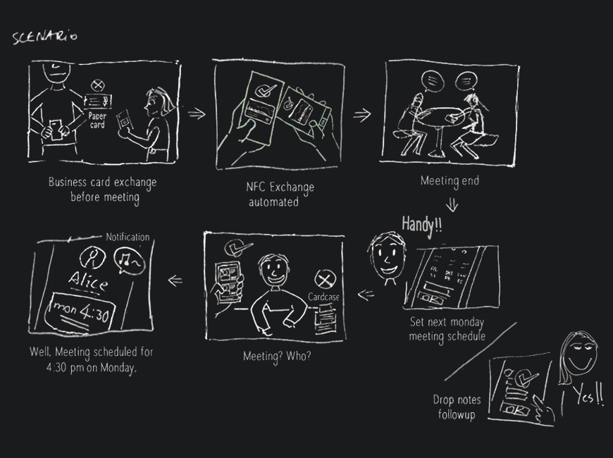

Project Goals
Establish a holistic of digitize business card platform that aims to user-centric approach to create a more efficient experience for people. To narrow the gap of paper card users going digital through a streamlined process simultaneously.
The highly vision was "PAPERLESS" to bring extra value on the project, "Save a tree"; "Save Mother Earth";
Did you know? Each year 100 billion business cards are produced worldwide, 58% end up in the bin, and going to landfill.
Credit: www.unep.org environment annual report 2019/20
Problem Discovery
Business cards are continues to be a business etiquette and social custom. We were unlikely to see business cards fade from the business landscape anytime soon.
While conducting early research, it's clear still having a huge user using paper business card today. A number of card ending up in the trash whenever organzie thier business card, and which causes pollutions impact. In currently experienceing, The app task was complicated that make barriers either which of paper card users motivation going digital and current app user frustration also, which means the user will back to use paper card, which is why the digital card app is not widely accepted.
Research and Empathize
Knowing the Business card users
The first thing to do is to get to know the users through data. I started researches to better understand the goal and scope. I conducted 10 interviewees which facebook and whatsapp chat group though quick survey questions how to manage and gather business card on a daily bases.
The following questions to learn about their current user facing:
Each with their problem and the way of use. Here are the summarized 2 type user quotes:
Paper card user :
"I always keep cards in my suits pocket when i got it. I haven't time save it, end up wasting time to find it on my cardcase"
"When I returned to the office, sort by name put into my cardcase, within 2 min"
"I used app in a short time, It’s so hard to operate, not enough tips how to done"
"I don’t deal with that many business cards on a regular basis, Sometime dirt and moisture on card i found"
Experience in app :
"Organize them while i return on office after meeting, and around 3-4 min import on my mobile, it's quite troublesome."
"Apps are quite useful but I dislike complex step while i add the new card, So, I end up uninstall it."
Knowing the Competitors
Majority of competitive app has tedious steps which may be why it not popluar. For example in Haystack findings :
PROS: Contact list easy to access and sharpens visual hierarchy.
CONS: Un-smoothly users task wasn't enough gudience; Each step take a time gap to learn about it, I need some patience to get job done, So I feel quite restless and vague.
CONS: I went through for the card creation step, it take a minimum of 4 min but there is no gudie on what to do it.
CONS: Core task button wasn't prime location at home screen because those placed in the settings menu. and also not well fitted single hand opreate.
Identifying pain points and figure out behavior patterns
Upon analysing this data, in order to discover problem what's current faced. Here, I utilized card sorting to summarize user quote that narrowing down scope what are the key findings through data.
Lack of time to organize
Key takeaway :
Overall, I noticed they had one common issue of both types users; Would not spend time and effort organizing business cards on purpose. They felt impatient and lack of time. Also, Most of interviewees said who still using paper card. Due to long time run a business and store sizable stash of business cards, so they ending up waste time to organized.
Unfriendly user flow
Key takeaway :
The complicated task that caused paper card users create barriers to entry and frustration, and also reflect current user unable to get motivate usage, which means the user will back to use paper card if doesn't fullfill real-life situation, because the app itself unfriendly.
Insights
#1 How do you currently organize thier business card?
The truth is, most people haven't spend time to organize bussiness card immediately, and manually save business card details to their mobile or put into cardcase. It's sometimes easy to forget or lose it. They often waste time on card finding if they contact with someone.
#2 Digital card app not common
Across those research before, with 2/10 interviewees experience in app. but they were also simultaneously feels hard to use and feel vague to some users, so they dropping off. Typically, Users only if provides simple way or clear guide of task flow will interested in app use. This opens rooms for development for digital card app for potential markert, that i observed.
#3 They don't worried about the environmental pollution issue
In fact, There was a human-facing issue not only app usage or not so. For paper card user who can not make a business card instantly if someone information changed they had to order an entirely new stack of business cards. There's also extra pollution whenever the people lose the card and production of the card. In other words, fit is more important for paper card users than for current app user with ones.
Defining what's Problem Space
Addressing right problems
I tried to analyze what is real problem they are facing actually, that helped me make inferences and figure out which feature to implement. At below, I defined of Point Of View Statements where cover 2 type of users. I anchored down user goal better frame the problem.
"As a Paper card user who often handle stacks of business cards, wants to be operate intuitively without any instructions while using the app, Because take time to evaluate each one and purge the ones i don’t really need, it's a hassle works."
"As a Digital card app user who often face to face with client, wants to automated and without any skill in a way and concerns whenever interact with the app, Because they want to avoid entry manully error and feels restless, so helps to elimate extra works and follow up was important."
Defining for Who?
Persona
In the phase, I created two persona that included bio, needs and behaviors. This helped me start to envision the kind of problems that such a user would have, and identifying who designing for.


Defining the How?
"How might I design a stress-free and efficiency way to organize business cards [what ] for current user and engage paper card people [who ] going digital so that opportunity to achieve eco-friendly goal?" [why ]
Ideating the How?
Hypothesis Statement
"We believe business card users problem is that they want to be manageable in a way to handle when garther business card, though feeling hassle at works at busy, but who are ready to continue to reduce their environmental impact possible, will encourage them in efficiency way to shifing thier habits. That will achieve 8% faster time-on-task for app workflow, in order to avoid to waste time on card managed."
"Base on huge amount of paper card users, In order to capitalize on this market opportunity, we would need to improve the overall experience to align with the business card users."
Ideating the Strategy
The Solution
Step-oriented make the task easier and smoothly
Task flow is an essential part of the app. Entire apps consist of three core feature: Card Creation, Card Exhange and Paper Card Digitalize. Aim to visually-fouced flow that helps for lessening users cognitive load and thier task completion intuitively. To do so, the users can focus on their tasks rather than on learning new things. It also helps to heightens the motivation of both user types so that fits real-life usage.
#1
Reduce task complexity, easier digitized
Creating a feature that reserve the images of paper card after taken shot as a digital card appearance, that able to skipped design card process - ideal for both user types who want to have speed on task and the unware of designing card visual. This is great way which either for paper card user going digial easier, and speed up time-on-task for app users also.
In order to guide users operate easier, With light-hearted and concise headline in each step that able to lead them for further action decsion easily (e.g. "What's my info", "Pick the Card Template Your Love" rathen than "Import info etc), so that to eliminates stress with user who feels “Order to do to so”.
For the card visual :
Ready-made Template - which is shortcut way without any design skill further to streamlining card visual custom.
Cloud-base Storage - which is feature given stability for user reuse card template content to standardize with thier brand guideline avoid wasting time duplicating efforts.
#2
Effortless way to shifting card organize habit by NFC
Building a interactive process that intergated with NFC feature. With this, card infomation interchange instanly and automatically, that helps to avoid data entry errors and better accuracy. Such a way to motivate them to engage with app and also change the way card organize. This helps to eliminate afterwards card manage works and follow up.
Plus, Offering new feature that allow user create the working schedules and reminders for the future things, make it following up easily in one place to avoid extra app usage occurs.
#3
Approach "Digital Cardcase" improve usability
Such a "Digital Cardcase" seem like real-life where presented cardcase appearance rather than only pure of contact list. It’s also the easiest to understand in which make interaction same logic as the paper card previously. Placing the key task in one spot was access easily, and that fit one-hand operations simultaneously that ensure real-life usage and behavior.
Identify the Idea
Initial task flow testing and Feedback
In this phase, I review the features further I ideated rollcase to have, and focused on interaction that improve task completion rate so that evaluated the design decisions based on those metric. I drafted 3 key paper mockup for rapid tesing that are essential to the user goals. I tested with two participants how they interacting with the app and solve usability issues early.
Here are 2 point are metric that keep in mind when i designing for :
1. Home Interaction
Iterating Feedback: :
Having a good feedback when interact with Home screen, they felt "Ease of use". But i noted not quite fit finger position when they access card. I tried to remove describe text of icon in mid filter bar shown icon symbol only. Put the card list a bit upward.
2. Own card creation
Iterating Feedback :
They expressed "it's quite easy". Despite two participants who completed the task, but they felt the step a bit longer. So I streamlined the step from four to three and fix some interaction element issues.
3. Import paper card
Iterating Feedback :
About scan card processing, They were unsure correct data of the card shot was filled if unextracted data. From here, I added preview of the screen accordingly that help them for editing if data extract not correctly.
Storyboard Assumptions
4. Card exchange process
This purpose of considering user exhange digital card after a meeting, and how it can be help for their following up to reduce work afterwards. Here’s the storyboard I came up with.
User Flow
After I got the revisions, I sketching out a flow diagram that help me to came up the whole journey ideating, Walk me through how I designed the rest of the experience as well.
Hi-Fi Wireframe
Next, I started with entire wireframes in XD that make idea of how the app actually look and feel. Below are the result of core features wireframing in which run few round A/B testing:


Crafting the Visual
Design System
I decided two keywords for visual apperenance of the app: Stylish and Reliable, inspire ideas in logo design concept also.
The ‘Card’ entire the app as key visual element. I hope take that for a good balance of usability and design be consistent visual language with the app. Utilize dark scheme makes the digital cards professsional calm appearance. In terms of typography, I used ClanOT family to be sure that more readable, white as primary for the text body, variety of gray as secondary and legible with orange accent color.
I utilized huge set of icon can help users operate easier as compared with text describe, and avoid causing confuse between users and the UI. Plus, I created set of illustration element that conveyed message clearly while user interacting key screens and intial onboarding.


Implementation Prototype
Delivering the Outcome
The primary advantage of roll:case lies in its convenience and actionable. During to few rounds iterating driven by revision and A/B testing to figure out which is effective with user. Final Hi-Fi prototype is more straightforward would be boost the entire users experience.
Want to finally get those cards organized and well control?
See how worked in Real-life use.
play_circle_filledClick on image to Play / Paused demo
Home Interaction
The Home designed as "Digital Cardcase" where show users which of the current digital card status more intuitively. With vertical scrolling emotional experience on the screen, that given users feels "Real" motion same as cardcase. Beside, In Card spread mode, make the call with one tap without having to open the card were not have to look up or waste their time. Fixed at the bottom of the core feature button in an obvious location can enable the user to perform the task at hand with ease.
By default, the lastest card is top of list. Tapping on middle filter panel allows a user to sort out contact list rapidly, such as recent contact, favorites, company and A-Z sorting. Swiping card it will open a side sheet that manage action lets user edit, delete and share. Detail
Tapping on a card to enter "Card Detail" screen. Swiping left the button make a phone call directly. Plus, I created new features that inspire by the iterating, in which allow user to add the person in the relationship list. Let user follow up easily with thier personal network each other if they have a business connection. Detail
Card Search
This search screen shows logging searches, such as recent contact person and history searches tag. Tap on mid filters bar help users narrow down their results with predefined categories. Make it easier to reach out to find they contact for. Detail
Own Card Creation
One of design goal was completion task easily, Across entire the app which provides a visual element and icons indicating and guiding how to perform of the users task easily.
Tap on a headshot at Home, they are taken to the "My card case" screen which is hub of own card. The create own card process where 3 mode available to:
1. Start all over - Step-by-step card creation
2. Corporate - Access from Cloud Storage
3. Scan card - paper card data extraction by OCR scanner
Start all over
STEP 1 :
Upon this demo, Contact Info where available via address book, mail and vCard format synchronize through thier phone so that prevent manual import errors. About the head icon, this is optional add or not if needed. Detail
STEP 2 :
Digital card visual creation is divided to 2 option: Detail
1. Ready-made Template -
Auto generated based on whatever the user has imported that help to streamline the entire process.
2. Customizable -
Customize digital card logo and background with tools, cropping and color overlay etc
Advance Setting :
As a flexible option where available for user adjust the card detail what info displaying on, such as layout, font style etc. Within as the user adjust their digital card, the outcome will be change in preview instanly.
Also, with enable "Set as corporate template", just one time created which cloud base storage, where share with workmate or teams. Allow user reuse card template content to standardize with thier brand guideline avoid wasting time duplicating efforts. Detail
Digital Card Exchange
Once users created first digital business card. Card exchange process was almost automated If the business partner has rollCase app. There are presented in a digestible way in 2 step.
As prototyping shown, swiping up center "Exchange" button to go to "Own Card" screen. First, swiping card you wanted share to, Next, target mobile near each other, showing animation if done. Beside, With scannable QR code back side (with option whenever card created ) for exchange if people without rollCase app. Detail
Once card was exhanged, home screen was showing new card. By long tap the card, gives options to edit, delete. It also comes with card share via email, WhatsApp, Facbook and Skype etc. Within "Card Detail" screen, one has the ability to add notes and activities with dates schedule activities with a reminder feature. They can do a proper followup or jot down important things after card exhanged without launch extra app usage. open_in_new Detail
Paper Card Digitalize
These are extremely useful for people have huge paper card. Not required design skill for user perform a task easily.
Upon this demo, When user get a paper card, Tap on "Scan" button to launch in-app camera. Its recognizes each field form the screen via OCR scanner. After take the shot, Users can crop the card shot image. Once presss Tick button, the extracted data will auto-fill to "Contact Import" screen what is field match with. Meanwhile, the card thumbnails appear on the top of the screen that allow users manually fix it if there is any detail extracted incorrect.
Once imported, "Keep the camera shot" is handy option which is shortcut way convert card shot image become as digital card apperance, if user not required custom thier card visual. This way, ensure that the user has already been able to satisfy thier needs on the simple way. Detail
Onboarding
As progress through the animated onboarding process. Understanding the app what task can to help them achieved so that increase the attention and level of trust in it also. For information security, the finger-print login are not only easier but rapidly as well. In way as safe for personal/contact info protected is critical.
Usability Testing
Each iteration went through usability testing to shape the next version and align with user goal. Has 3 participants who 100% completed the tasks and positive feedback. Here are satisfaction rate of task metrics:
Ability to accomplish each task within 3 min
star star star star star_half
Suitable for real-life scenarios and situation
star star star star star_border
Believed reduce enviroment impact through roll:case app
star star star star star_border
Takeaway
Being the limited resources as only UX/UI designer on the project. This app is special to me because it was the first own UX project, which opened my eyes to the possibilities of using UX mindset as a solution which show me concrete experience.
Looking back on the whole project was very fun, challenging and I am striving for. Besides, I pleased with the end-to-end result of this apps and fulfill social responsibility with an eco-solution solution - Save the Earth! :)
Expanding to platforms with video background of the digital card and chinese version would be a clear next step further. This would help user engaging experience and users get the better insights.


{kind=link}
{kind=link}
{kind=link}
{kind=link}
{kind=link}
{kind=link}
{kind=link}
{kind=link}
{kind=link}
{kind=link}